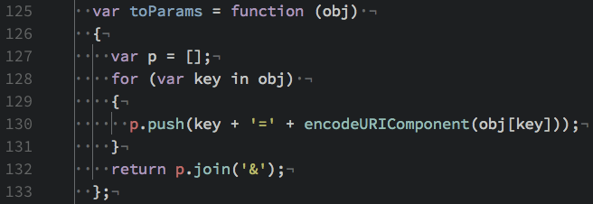
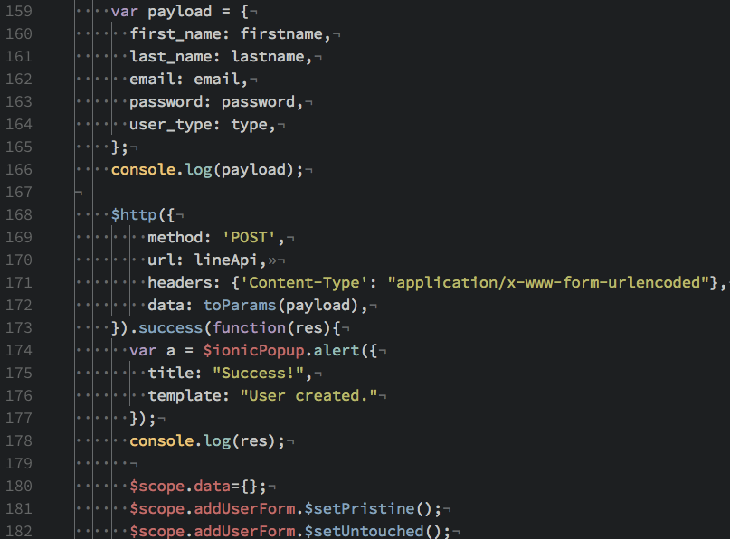

Send via POST
submitUser()
We start with an auxiliary function that will pack the data from our form into the parameters for the POST request.
We then put our values into the payload and run that aux function on the payload before shipping it out in the POST request.
We then clear our form with some calls to built-in $scope directives.
This should give you a general overview of the basic requests we can perform with an Ionic app and an exposed RESTful API.
Next, we will take a look at adding some mobile-specific features to your application.
Next